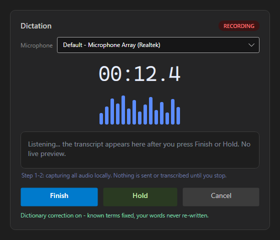
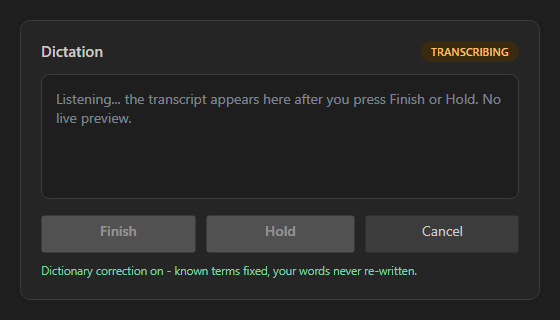
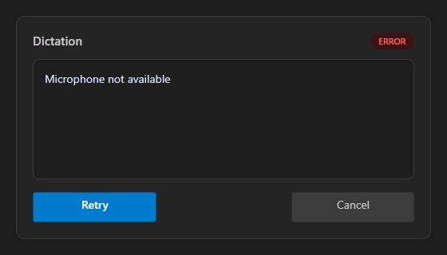
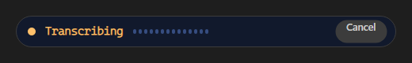

D:\ReposFred\devthrottle-qa-588.local-build-avalonia.ps1 -Slot 13 -> Build succeeded, 0 Warning(s), 0 Error(s).cc-director13-launch (Control API on port 7890, healthz OK), then tore it down with the same script.playground/transcription-component-harness) to render every required state of both variants from the real control, and read each PNG.dotnet build cc-director.sln -> Build succeeded, 0 Warning(s), 0 Error(s).| # | Criterion | Expected | Actual | Result |
|---|---|---|---|---|
| 1 | One shared component with a full and a small variant rendering the same states and the same Finish/Hold/Cancel controls. | Both variants render; one control class with two size variants and one set of commit controls. | Single control TranscriptionComponent with a TranscriptionVariant {Full, Small}; both render; both expose Finish/Hold/Cancel (re-labelled per state). See full and small renders below. |
PASS |
| 2 | Recording state shows a waveform and a timer and NO transcript text. | Recording screenshot with waveform + timer and an empty/placeholder transcript area. | Full recording: timer 00:12.4, waveform bars, placeholder only ("Listening... the transcript appears here after you press Finish or Hold. No live preview."). Small recording: pulse dot + 00:12 + waveform, no text. | PASS |
| 3 | Transcript appears only after transcribing; no live partial-text path. | No API to push partial text; review state shows final text. | Public surface has only ShowReview/ShowUsed/ShowError for text; Recording and Transcribing clear the transcript to empty. Transcribing render shows no text. No AppendText/partial method exists. |
PASS |
| 4 | Hold/review shows final text with the dictionary-correction count and offers send/edit/discard; Finish raises finished output without review. | Review screenshot with final text + corrected-words count + Send/Edit/Discard; Finish path raises OnFinished without a review step. | Review render: final text + "2 dictionary words corrected. Raw wording preserved." + Send/Edit/Discard. In code, Finish (primary in Recording/Idle) raises Finished(text) directly; Hold raises Held(text) to the review state. |
PASS |
| 5 | Error state shows a named reason and offers retry. | Error screenshot with a named reason and a retry control. | Error render: ERROR pill, named reason "Microphone not available", Retry + Cancel buttons. ShowError throws if the reason is empty - a named reason is required. |
PASS |





#252526 dialog background, #1E1E1E transcript area, #3C3C3C borders/cancel, #007ACC accent primary, #CCCCCC text. State pills use semantic accent colors (status-indicator role).